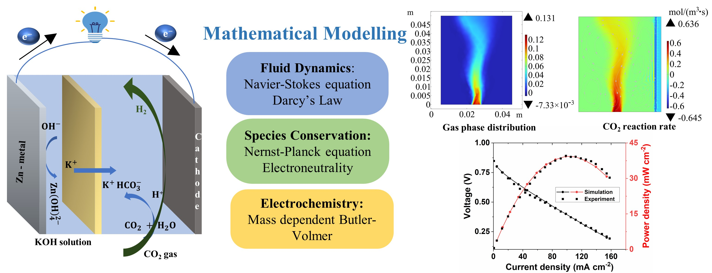

Journal of Power Sources · 2026
Anthropogenic carbon dioxide (CO2) emissions are a major contributor to global warming, emphasizing the need for sustainable carbon capture, utilization, and storage (CCUS) strategies. Zn-CO2 electrochemical systems are a promising CCUS pathway, converting CO2 into value-added products like CO, CH4, and H2, while offering advantages in cost, stability, scalability, and energy output. However, these technologies remain at an early stage of development, and physics-based mathematical frameworks for in-depth performance analysis have yet to be established. This study presents a two-dimensional transient isothermal electrochemical model that integrates momentum and mass conservation with a two-phase Euler–Euler model, dilute solution theory, porous electrode theory, and Darcy's law. Model accuracy is validated against experimental data, and predictions include local electrolyte potential distribution, electrolyte flow field, CO2 transport, time-dependent species concentrations, and hydrogen accumulation. Parametric analyses demonstrate that higher cathode porosity, increased reaction rate constant, and reduced cathode–membrane spacing enhance performance. Maximum power density increased by 28.74% at a spacing of 3.0 cm and by 61.65% when the forward hydration reaction rate constant is raised to 4.4 s−1. This study offers a cleaner production pathway for converting carbon emissions into sustainable hydrogen fuel and energy and enhancing CO2 utilization efficiency.
Keywords: CO2 utilization; Hydrogen production; Energy conversion; Zn-CO2 system modeling; Chemisorption; COMSOL Multiphysics®
The developed model is a two-dimensional, transient, isothermal multiphysics framework for the aqueous Zn–CO2 system. It couples multiphase flow, ionic transport, electrochemical reactions, porous-media transport, and CO2 conversion.
Schematic representation of the aqueous Zn–CO2 electrochemical system and the coupled multiphysics modeling framework for CO2 utilization, hydrogen production, and energy conversion.

Aqueous Zn–CO2 system and multiphase modeling framework.
The model was validated against experimental polarization and power-density data reported in the literature. The comparison demonstrated strong agreement between the simulated and experimental results, with a root mean square error of 1.47 mA cm−2 for current density and 0.92 mW cm−2 for power density.
If you find this research or the modeling framework useful in your work, please cite it using the format below:
@article{singh2026multiphase,
title={Multiphase flow modeling of an aqueous Zn-CO2 system for CO2 utilization and hydrogen production},
author={Singh, Raman Kumar and Ghosh, Prakash C. and Ramadesigan, Venkatasailanathan},
journal={Journal of Power Sources},
volume={694},
pages={241142},
year={2026},
publisher={Elsevier},
doi={10.1016/j.jpowsour.2026.241142}
}